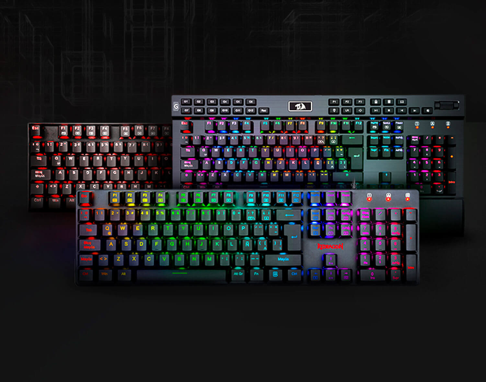

Logitech
Logitech es una de las marcas mas reconocidas entre los jugadores con perifericos gaming por su gran variedad de precios y calidades de perifericos, ya que varian mucho, asi como tiene productos de bajo costo, tiene productos de un costo alto
Hyperx
Hyperx es conocido por su buena calidad en todos los perifericos ya sean teclados, mouse, audifonos, etc, sus precios son relativamente altos, pero valen la pena en su mayoria de opciones.Redragon
Redragon es caracterizado por ser calidad precio y por sus precios mas bajos a comparacion de otras marcas reconocidas, su precio esta al mismo rango de la calidad de sus perifericos.